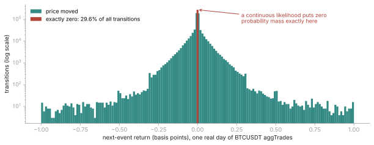

The last big deliverable of the summer is a capstone tutorial: the streaming stack applied to real financial tick data, end to end. I assumed the hard part would be the modeling. It wasn't. The hard part was discovering that choosing the example is itself a statistics problem — and that most candidate examples are quietly fake.
The two gates
Minibatch VI rests on one identity: the batch log-likelihood times N/B is an
unbiased estimate of the full-data log-likelihood. For a showcase to be honest, two
conditions have to hold, and they became my acceptance gates for every candidate design:
Gate 1 — the likelihood must factor over rows given the global and hierarchical parameters. No latent time-series path coupling observations, and no label shared across rows. Gate 2 — no finite sufficient statistics. If a one-pass summary of the data determines the posterior exactly, streaming inference is theater: you could just compute the summary.
Three burials
Candidate one was close to home: a calibration study of World Cup prediction markets, on the tick data I spent June recording. Every tick of a match looks like an observation until you notice they all share one outcome label. The effective sample size is the number of matches — about fifty — not the number of ticks. Pseudo-replication, Gate 1, dead. (It also failed on reproducibility: the exchange's data terms exclude ML training use, and the archive I'd hoped readers could download stopped collecting hours before the opening match.)
Candidate two was the classic: stochastic volatility. But a latent volatility path couples every observation to its neighbors — the likelihood does not factor over rows, minibatch rescaling is invalid, Gate 1 again. This one stung, because the existing PyMC example gallery's most famous finance notebook is exactly this model. The capstone now cites it as the contrast: here is why that model cannot be minibatched, and here is one that can.
Candidate three was my own first "fixed" design: hierarchical intraday
volatility, Normal returns with a per-cell scale. It passes Gate 1 beautifully. Then
Gate 2 kills it: a Normal likelihood with cell-level variance has sufficient statistics
— per cell, the sum of squares and the count. Five thousand cells, two numbers
each: one linear scan computes them and the "streaming inference" demo collapses into a
glorified groupby. What breaks the collapse, provably: Student-t
observation noise, and row-level continuous covariates through a nonlinear link.
The survivor, and the cut it still needed
What passed both gates: next-event price moves on Binance's public tick archive. One row per trade-to-trade transition, each with its own label; Student-t noise for the heavy tails; volatility linked to hour-of-day and trailing activity through a log link; partial pooling across ~200 symbols, where the thin cells — illiquid alt-coins at 4 a.m. — are exactly where hierarchical shrinkage earns its keep. Public data, MIT-licensed, verified down to the checksum.
Then I did to my own design what the review tools have been doing to my PRs all month: I handed it to an adversarial reviewer with instructions to kill it. The best objection survived every defense I had — and it was empirical, not theoretical. Measure the transitions on a real day of BTCUSDT and 29.6% of them have exactly zero price change. A continuous likelihood puts zero probability mass on the single most common outcome in the dataset.

The fix is a hurdle: model whether the price moves (a Bernoulli, with its own hierarchical structure) separately from how far it moves given that it does (the Student-t). The zero mass stops being a misspecification and becomes the most interesting part of the model — it is the microstructure. And the mixture is, by itself, a second reason Gate 2 stays satisfied.
One more trap closed this week, and it was my own docstring that named it. Week 10 showed that a bounded shuffle buffer only block-shuffles strongly ordered data. The tick archive is exactly that — sorted by symbol and time — so a convergence check could fire before training had ever seen November. The shuffle therefore happens on disk, at ETL time: every row is scattered by a deterministic hash, and the first ten thousand rows of any shard now span all twenty-four hours of the day. Verified, not assumed.
Also this week: two drafts that end in questions
The convergence monitor and the streaming Pathfinder finally went out as draft PRs (pymc#8384, pymc-extras#722) — at my mentor's explicit request to see them before they got any more polished. Both descriptions end with open design questions rather than claims: is the robust-scale machinery worth its lines, should a distribution shift drain the stopping statistic or accelerate it, does the API want a standalone function or a parameter. The complexity decisions are cheaper made together than defended after the fact.
Next: the full-scale runs. The prototype is recovering ground truth on synthetic data as I write this, and the ETL pipeline is already feeding real shards through the DataLoader. If the numbers hold, next week's note is about fitting half a billion rows on a laptop that cannot hold them.
Links. CheckLossConvergence PR #8384 · Streaming Pathfinder PR #722 · Week 10: inside the DataLoader · Week 7: the CUSUM monitor · GSoC project page · Mentors @fonnesbeck · @zaxtax